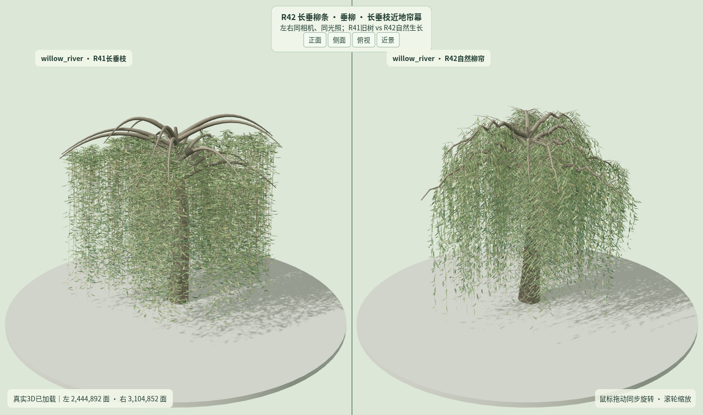
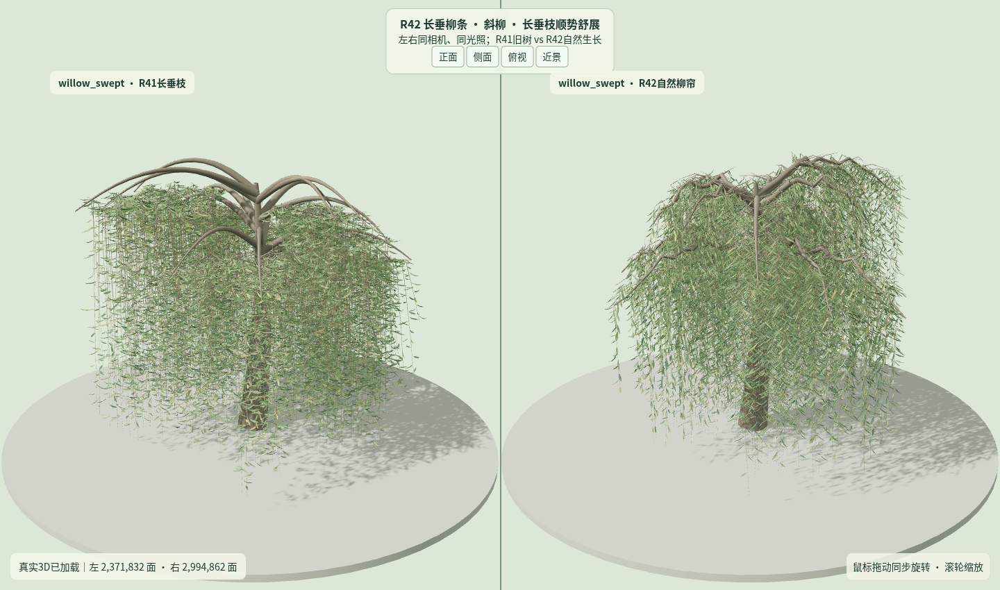

河岸垂柳
左侧 R41，右侧 R42。重点看从树冠高处落向地面的柳丝、叶间透光、非等距枝梢和疏密不均的外轮廓。
打开 3D 旋转 / 拉近 A/BR41 建立了真实长垂枝；R42 进一步修正主枝挂点、枝梢重力弯曲、不同高度的叶幕间隙与二级柔枝。左右两侧均是 Blender 生成的完整 GLB，通过 Chrome WebGL 实际加载和截屏，不用贴图、看板或绿色体块。

左侧 R41，右侧 R42。重点看从树冠高处落向地面的柳丝、叶间透光、非等距枝梢和疏密不均的外轮廓。
打开 3D 旋转 / 拉近 A/B
保留树干倾斜和非对称树冠；柳条的弧度、长短和朝向不再简单复制成圆筒状叶帘。
打开 3D 旋转 / 拉近 A/B| 指标 | R42 河岸垂柳 | R42 斜生垂柳 |
|---|---|---|
| 悬垂细枝 | 796 条 | 763 条 |
| 独立三维柳叶 | 24,586 片 | 23,721 片 |
| 最大枝条下垂 | 6.33m | 6.22m |
| 平均枝条下垂 | 4.21m | 3.85m |
| 枝梢低于 1.45m | 54.1% | 54.9% |
| 三角面 | 3,104,852 | 2,994,862 |